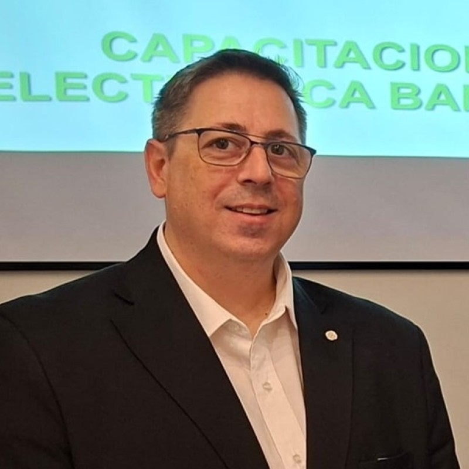

Sebastián Tribó
Licenciado en Seguridad
Perfil Profesional
Licenciado en Seguridad con una trayectoria de más de 30 años en el sector público y privado,
especializado en seguridad bancaria, corporativa y transporte de caudales. Posee una formación
académica de alto nivel que incluye una Maestría en Seguridad Pública, un Máster en Seguridad e
Higiene y certificaciones internacionales como Lean Oro y la cursada de CPP de ASIS. Su experiencia
destaca por el liderazgo de equipos operativos en empresas de primer nivel como Brinks Argentina,
Banco Macro y BBVA, además de una carrera de 23 años en la Policía Federal Argentina. Actualmente,
complementa su perfil técnico y estratégico como docente universitario en el IUPFA e IUSE, dictando
materias sobre gestión de riesgos y seguridad bancaria. Es un profesional experto en planeamiento de
seguridad física y electrónica con una visión integral orientada a la mejora continua de procesos.
Experiencia
-
Gerente de Operaciones (Low Risk) – May. 2025 - Actualidad (8 meses)
- Gestión de la seguridad de activos y propiedades en proyectos de infraestructura crítica.
-
Jefe de Seguridad Brinks Global Services, Monitoreo & Seguridad de Planta – Sept. 2020 - 2025
- Gestión de seguridad en planta y supervisión de servicios globales y monitoreo.
-
Docente Universitario (IUPFA e IUSE) – 2021 - Actualidad
- Profesor en materias de Transporte de Valores, Seguridad Bancaria, Privada y Corporativa.
-
Jefe de Seguridad Operativa (Brink's Argentina) – 2016 - 2019
- Responsable de la operatividad de seguridad y control de riesgos de la firma.
-
Asesor de Proyectos de Seguridad y Protección (CAME) – 2016 - 2018
- Asesoría independiente para la Gerencia General en proyectos de protección integral.
-
Coordinador de Protección de Edificios Corporativos (BBVA Banco Francés SA) – 2013 - 2016
- Gestión de seguridad edilicia en simultáneo con sus funciones en la Policía Federal.
-
Jefe de Seguridad Física y Bancaria (Banco Macro SA) – 2012 - 2013
- Liderazgo del área de seguridad física y control de fraudes.
-
Coordinador de Seguridad Física División Bs. As. y Sur (Banco Macro SA) – 2008 - 2011
- Supervisión de seguridad en sucursales y activos de la región de Buenos Aires y zona sur.
Educación
- Certificación Lean Oro y Plata – Gerencia de Calidad Brink's Argentina, 2021 - 2022
- Diplomatura de Seguridad en el Transporte Aéreo – Instituto Universitario de Seguridad de la Ciudad (IUSE), 2020
- Diplomatura en Seguridad Informática – Universidad Tecnológica Nacional (UTN), 2015 - 2016
- CPP - Certified Protection Professional (Cursada Completa) – ASIS Internacional, 2016 - 2017
- Máster de Seguridad e Higiene en el Trabajo – Instituto Argentino de Seguridad (IAS), 2009
- Especialización en Seguridad Bancaria – Instituto Universitario de la PFA (IUPFA), 2007
- Maestría en Seguridad Pública (Cursada Completa y Aprobada) – Instituto Universitario de la PFA (IUPFA), 2004 - 2006
- Licenciatura en Seguridad – Instituto Universitario de la PFA (IUPFA), 1999 - 2002
Competencias
- Seguridad Bancaria y Transporte de Valores: Experto en normativa, circuitos bancarios y protección de caudales.
- Gestión de Seguridad Patrimonial: Planeamiento estratégico de seguridad física y electrónica.
- Mejora Continua (Lean Manufacturing): Aplicación de metodología Lean para optimización de procesos de seguridad.
- Investigación y Prevención del Delito: Especialista en lucha contra el narcotráfico y técnicas de investigación criminal.
- Protección Ejecutiva: Formación avanzada en custodia y seguridad de personas.
- Liderazgo y Docencia: Dirección de grandes equipos operativos y formación académica de nuevos profesionales.
